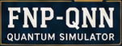
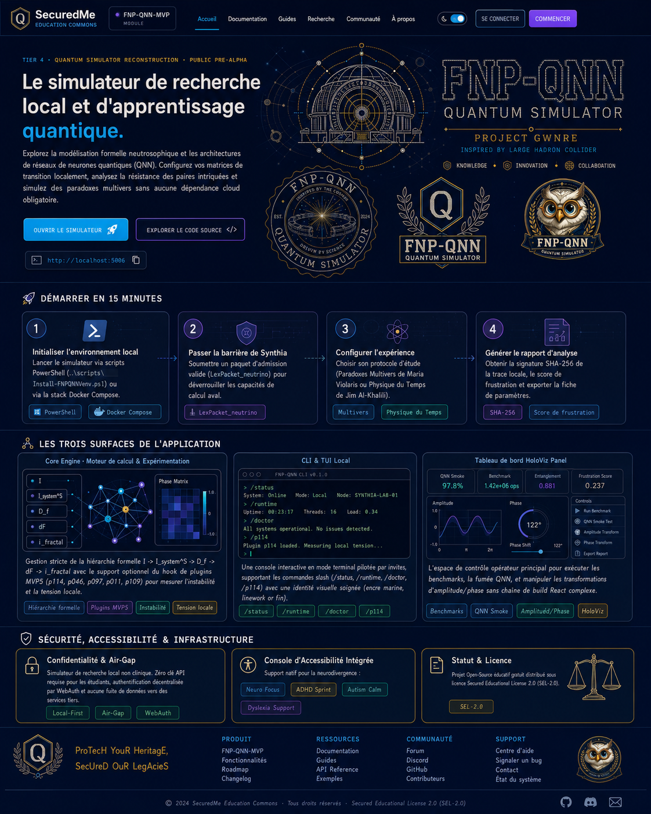

Suite role
FNP-QNN receives Synthia-admitted trace packets and turns them into local network experiments, dashboard evidence, and exportable reports for human review.

SourceTier 4 - quantum simulator reconstruction - public pre-alpha
Local research simulator for memory-to-network learning.
Explore Synthia-admitted lexical packets, Cerebrum-style runtime events, deterministic feature vectors, candidate QNN lanes, and evidence-first review in a local educational research surface.

SecuredMe Education Commons
FNP-QNN receives Synthia-admitted trace packets and turns them into local network experiments, dashboard evidence, and exportable reports for human review.
Learners and reviewers can return to the Education hub to compare FNP-QNN with Synthia, AlgoQuest, Scholarium, and the other learning surfaces in the suite.
Open Education hubStart in 15 minutes
Use the local Python runtime or Docker Compose lane. Keep credentials outside the public package.
.\.venv\Scripts\python.exe
FNP-QNN computes only after a public-safe lexical packet is admitted and traced.
fnp-qnn neutrino guardrail-check
Run Cerebrum runtime or QNN smoke with visible epochs, state basis, and T/I/F controls.
fnp-qnn qnn smoke --epochs 4
Inspect events, pairs, QNN benchmark, Network Designer output, warnings, and raw JSON.
SHA-256 + human review
Product flow
Three application surfaces
Typed FastAPI and Pydantic-bounded inputs expose the simulator without shell execution.
api/main.pyapi/schemas.pycore/cerebrum_runtime_bridge.pycore/qnn_nucleus.pyPrompt-driven local commands show status, runtime smoke, QNN smoke, NeuroBit, validation, and diagnostics.
fnp-qnn status
fnp-qnn runtime run
fnp-qnn qnn smoke
fnp-qnn neurobit gates
fnp-qnn doctor
fnp-qnn-tuiHoloViz Panel keeps the operator flow visible without pretending production deployment.
Network Designer
Network Designer visualizes typed families, presets, ports, backend status, warnings, and local execution results. Qiskit is optional and gated; the deterministic fallback remains the default representable path.
API groups
GET /healthGET /cerebrum/statusPOST /cerebrum/encodePOST /cerebrum/runtime/runGET /qnn/candidatesPOST /qnn/smokeGET /fnp-qnn/neurobit/statusPOST /fnp-qnn/neurobit/gates/runPOST /commands/{command_name}POST /execute-commandEvidence dashboard
Synthia / FNP-QNN boundary
Synthia preserves lexical admission and trace context. FNP-QNN computes bounded simulation evidence after admission. Neither layer proves a detector result, clinical claim, production safety claim, or physical quantum validation.